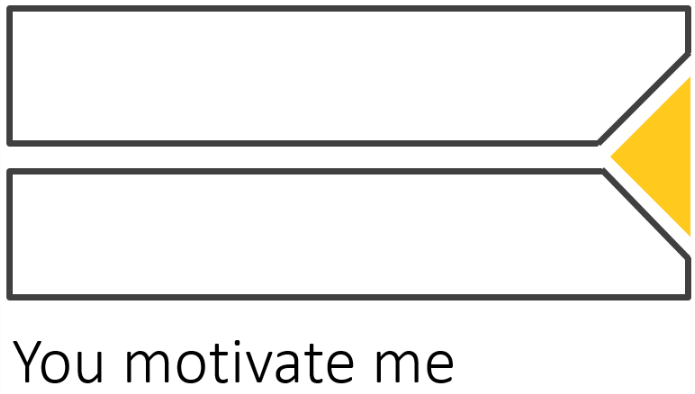

專題動機
家教自古以來就是個人教育的主要方式之一，發展至今仍是一項熱門的行業，是學校課程外的重要補充學習。家教可以補習學校功課課業，也可以教授專業技能，例如樂器、語言等，而且通常是以時薪制的方式來計算，族群以學生為主，尤其是以高中生或大學生為主。也因此通常是兼職或臨時的性質，並不會是以此為主業。
而現在已是個網路發達的時代，市面上其實已經存在很多提供給家教使用的平台，像是許多人會透過家教仲介業者或人力銀行的網站應徵或是招募，雖然如此，但仍然沒出現一個具有代表性的家教使用平台。
在智慧型手機成熟前，礙於科技進展，行動裝置應用有限，家教的平台只能以網站的方式呈現，而且還缺乏設計美感和使用者體驗，但現在隨著科技的日新月異，手機應用軟體日趨成熟，使用手機的族群比過去更加廣泛，幾乎現在每個人都人手有一支智慧型手機，甚至還超過，所以我們將目標設置在手機app的平台開發，一個方便又簡單操作的家教app，而我們也決定針對家教族群最主要的大學生族群，設計出一個提供學生和家教老師共同使用的平台app。讓老師跟學生們可以透過我們的平台，能夠簡單地進行線上學習或教學。